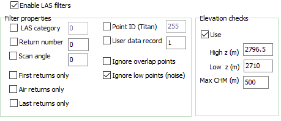

LIDAR Point cloud form option
LIDAR Point cloud form option
|
 |
Filters tab: checkbox determines if filters will be
used. Elevation checks can exclude high and low points, that are not identified as noise. You can use a histogram to find values to use, or EW and NS slices through the point cloud.
|
Last revision 4/10/2018